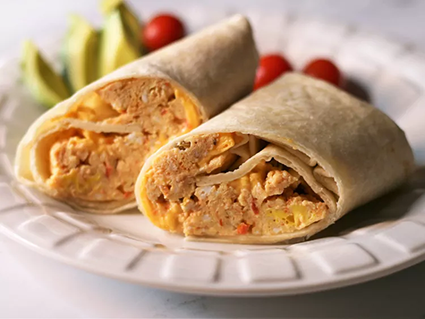

Burrito

Description
A burrito is a dish in Mexican and Tex-Mex cuisine that took form in Ciudad Juárez, consisting of a flour tortilla wrapped into a sealed cylindrical shape around various ingredients. The tortilla is sometimes lightly grilled or steamed to soften it, make it more pliable, and allow it to adhere to itself.
A fast DIY breakfast for the road.
Ingredients
These are the ingredients you'll need to make this irresistible burrito recipe:
- 2 eggs
- 2 tablespoons salsa
- 1 slice reduced-fat American cheese
- 1 tortilla
Steps
- Spray a cereal bowl with nonstick cooking spray. Crack the eggs into the bowl, add the salsa, and stir. Microwave on high for 1 minute, stir, and cook for another minute or until the mixture firms up.
- Place the cheese in the center of the tortilla and top it with the egg mixture. Wrap it all up like a burrito and head for the car.